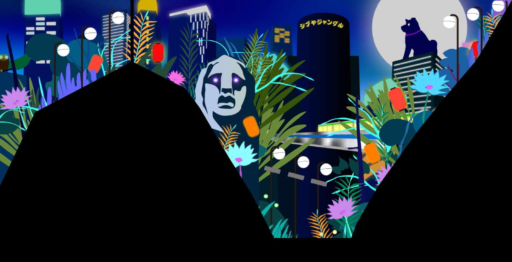
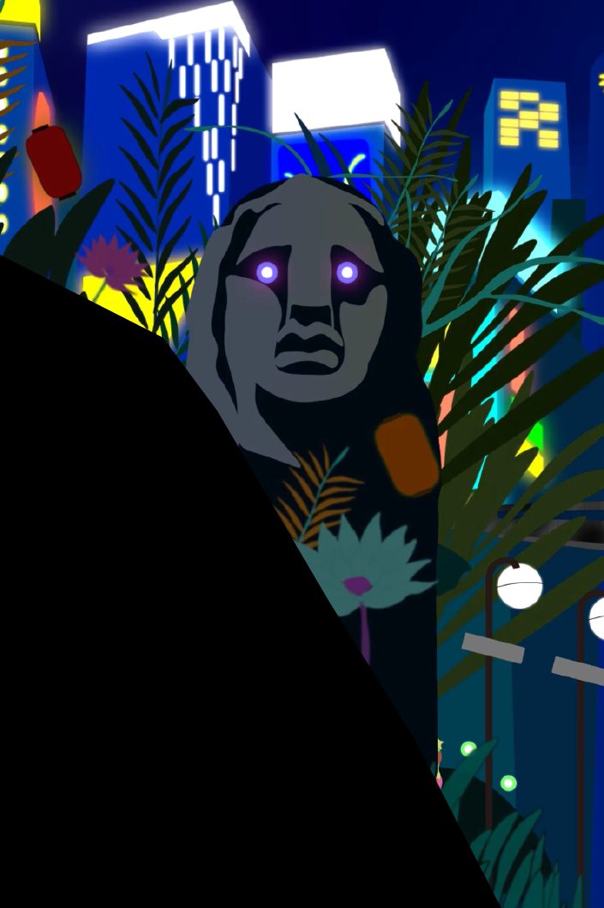
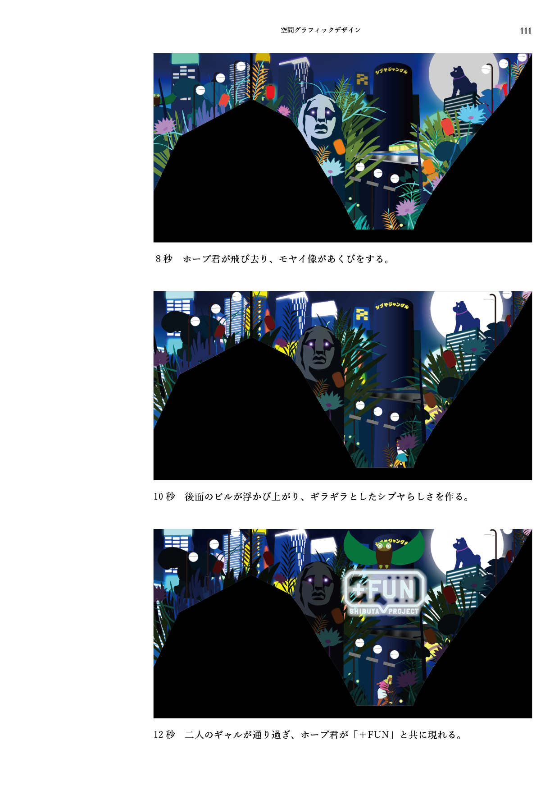

シブヤ・ジャングル
SHIBUYA JUNGLE


渋谷スクランブルスクエア大型ヴィジョン放映予定作品
得体の知れなさを魅力として表現。
2024年4月から1年間、渋谷スクランブルスクエア大型ヴィジョンで放映される15秒のモーショングラフィックスの制作を行った。何度訪れても未知なものが発見できる渋谷。その得体の知れなさが魅力であると考え、渋谷の街をジャングルとして捉えた表現を行った。ジャングルらしい擬音語、「カサカサ」「ギョロギョロ」「パチパチ」などと渋谷を構成する要素、「モヤイ像」「ハチ公」「ホープ君」などを掛け合わせた。また、映像の大半が静止画となりその中でキャラクターたちが動き、まるでジャングルの中に迷い込み何かに見られている感覚を目指した。映像にはたくさんのキャラクターたちが潜み、何度見ても新しい発見がある、まるで渋谷のように得体の知れなさが魅力の作品となっている。
